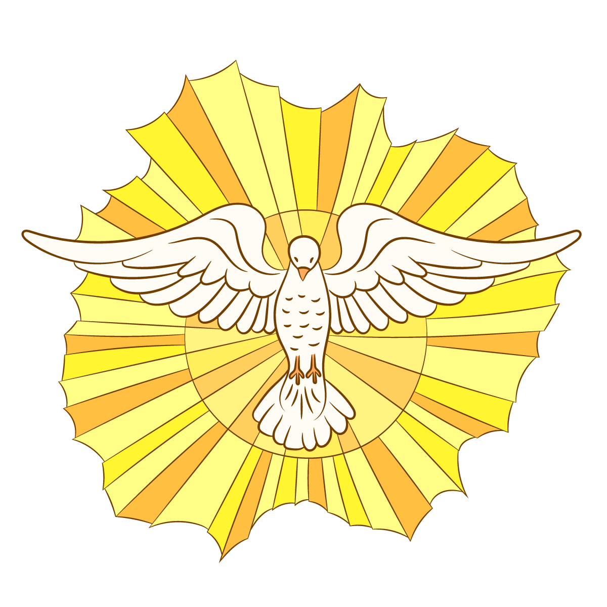

Sacramento de
Con la bendición de Dios
Tenemos el honor de invitarles a la Primera Comunión de
Franklin Quizhpe
Cindy Baculima
Rolando Bacilima
Elena Ñauta
Faltan
Programa del día
Ubicación
Parroquia Guadalupe · Jaime Roldós
Celebración · Olla de Barro